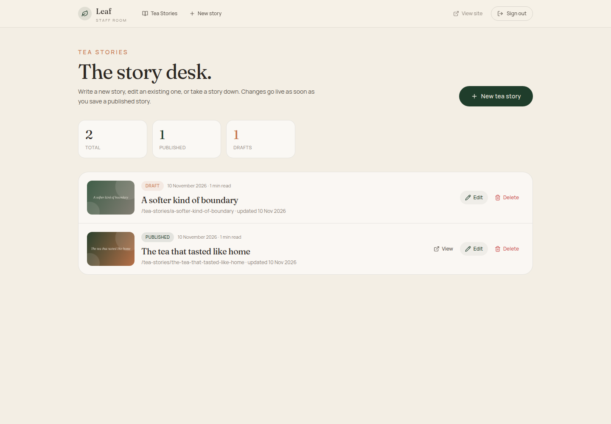

2
Step two
Open the story desk.
After signing in you arrive at The story desk. This is the home of every Tea Story — published and draft.

Example shown. Your desk will list your own stories. The counts at the top update automatically.
Start a new story
Click the dark New tea story button on the right. The + New story link in the top navigation does the same thing.
Read the badges
Published means the story is live. Draft means it is only visible to signed-in staff.
Use the row actions
View opens the public page (published stories only). Edit opens the editor. Delete removes the story permanently.
Opening a story
Click New tea story to begin. If you are returning to an existing story, find it in the list and click Edit.